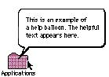

|
Balloon HelpBalloon Help provides onscreen descriptions of items in balloons shaped like cartoon speech balloons. The user turns on Balloon Help when he or she wants to find out something about an interface element. Once Balloon Help is turned on, the balloon for an item appears when the user moves the pointer to an item. The balloon stays on the screen until the user moves the pointer away from the item. In this way, users get context-sensitive, task-oriented information exactly when they need it. Figure 11-8 shows an example of a help balloon. This section briefly describes the kinds of items for which you can add balloons and provides some guidelines for writing the text in balloons. For information on implementing Balloon Help in your application, see Inside Macintosh: More Macintosh Toolbox. For complete information on writing the text in balloons, see "How to Write Balloons," a supplement to the Apple Publications Style Guide. For additional information on creating balloons, refer to the Balloon Writer User's Guide, which is available from APDA. Subtopics |